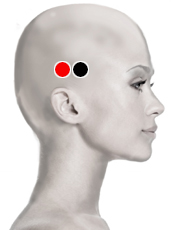

Tifo exantemático
Pares
temporal (D) - temporal (D)
temporal (I) - temporal (I)

Generalidades:
Dolores de cabeza, irritabilidad nerviosa, fiebre migraña , confusión mental, da positivo a pruebas de reacciones febriles. Disfunción del oído, cefalea unilateral , Trastornos de conducta. Proncipal causa de Insomnio severo.
Elimina las obstrucciones del canal auditivo, abre el oído y beneficia la audición, expulsa el viento externo.
La infección es causada por la bacteria Rickettsia prowazecki que es trasmitida por piojos. Los síntomas se presentan entre una y dos semanas después del contagio, ellos son: fiebre, afección de garganta, escalofríos, dolor de cabeza, dolor muscular. Puede presentarse una fiebre abrupta con estupor y delirios. Cuando la fiebre aparece, el piojo se va e infecta a otra persona. Unos días después pueden aparecer exantemas que respetan las palmas y plantas de los pies. La persona puede estar hasta semanas en postración. Si la enfermedad se complica puede afectar los riñones, hígado y otros órganos.
Por el piojo verde.